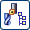
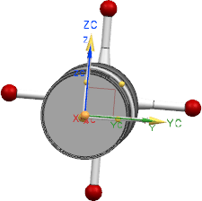

Set probe tool properties
In this activity, you will set your new probe tool to work with CMM Inspection Programming and define the probe mounting junction.
-
On the Resource Bar, click the Inspection Navigator tab
 .
.
-
In the Navigator toolbar, click Machine View .
-
Rotate the probe so that the CSYS appears as shown below.

-
In the Inspection Navigator, right-click GENERIC_MACHINE and choose Insert→New Probe.
-
If it is not already selected, in the Create Tool dialog box, in the Location group, select GENERIC_MACHINE.
-
In the Name box, type a descriptive name of 30 characters or less for the new tool as you want it to appear in the Inspection Navigator, and then click OK.
-
In the Probe dialog box, in the Mounting Junction group, click
 .
.
-
In the CSYS dialog box, in the Type group, select Absolute CSYS, and then click OK.
Caution
The Renishaw library components were created with the CAD absolute X axis aligned with the tool axis. This coordinate system will be aligned with the tool mount junction specified in the kinematics for the CMM machine or probe head. The CAD absolute X axis of the Mounting Junction must be oriented along the tool axis for animations to work correctly.
The mounting junction CSYS is now visible, and aligns with the probe CSYS.

The probe tool is now set to work with the CMM and head tools in CMM Inspection Programming. Leave the Probe dialog box open for the next activity.